Основы алгоритмизации и программирования
Графическое представление алгоритмов
Содержание лекции
Алгоритм
Алгоритм — набор инструкций, описывающих порядок действий исполнителя для достижения некоторого результата.
Способы представления алгоритмов
- Словесный
- Программный
- Псевдокод
- Графический
Графический способ представления алгоритмов
При графическом представлении алгоритм изображается в виде последовательности связанных между собой функциональных блоков, каждый из которых соответствует выполнению одного или нескольких действий.
Пример
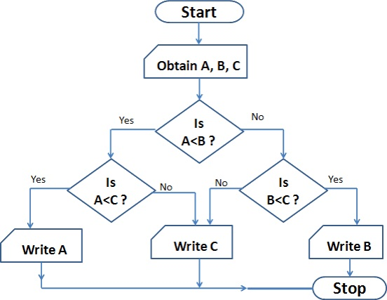Стандарты
ГОСТ
Основные элементы схем
Все отображаемые элементы на схеме можно классифицировать по группам:
- Линии
- Процессы
- Данные
- Спец. блоки
Линии

По ГОСТ последовательность действий алгоритма на схеме по возможности должна быть направлена сверху вниз и слева на право.
Также следует избегать пересечения линий.
Стрелки к линиям можно не приписывать, это не строго.
Параллельные действия
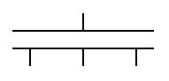Параллельные действия обозначаются на схеме через символ двойной линии. Блоки, выходящие из одной линии могут выполняться параллельно друг другу.
Пример параллельных операций
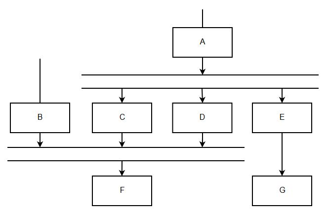Здесь операции C, D и E будут выполняться параллельно.
Особые линии
Существует несколько особых типов соединителей для специфических ситуаций.
| Альтернативная связь |  |
Когда необходимо показать альтернативные варианты действий без условий. |
| Передача по каналу связи | 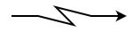 | Если передача управления или данных осуществляется между компьютерными системами по каналу связи. |
| Передача управления между процессами | 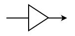 | Когда управление передается от одного процесса другому. |
Процессы
Блоки процессов - это основные функциональные элементы блок-схемы. Именно с помощью них описывается основная логика алгоритма.
Стандартный блок для выполнения какой-либо функции:
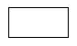Решение
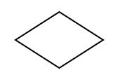Блок решения используется для ветвления пути выполнения алгоритма, когда в зависимости от исполнения определённого условия должны быть выполнены различные действия.
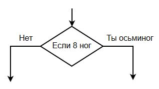Цикл

Блоки цикла используются для обозначения набора циклических инструкций и условий для количества их повторений.
Все блоки, расположенные между открывающим блоком цикла и закрывающим блоком цикла, являются содержимым цикла и повторяются в соответствии с заданными условиями.
Примеры циклов
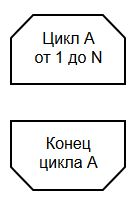
Более редкие блоки процессов
| Предопределённый процесс | 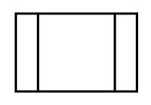 | Процесс, описанный в другом модуле, подпрограмме. |
| Ручная операция |  |
Процесс, выполняемый человеком вручную. |
| Подготовка | 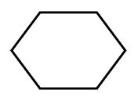 | Модификация с целью воздействия на некоторую последующую функцию (инициализация программы, установка переключателя, регистра). |
Данные
Данные - это то, что управляет алгоритмом и определяет его конечную форму.
Основной блок для задания данных:

Это наиболее общий блок для данных, который применяется тогда, когда нет жесткой необходимости задавать конкретный тип носителя данных.
Спецефические элементы данных
| Хранимые данных | Описывает общий вид данных на устройстве хранения. | |
| Данные в оперативной памяти | |
Для данных из оперативной памяти компьютера. |
| Данные с последовательным доступом | Данные на устройстве с последовательным доступом (магнитная лента). |
Спецефические элементы данных 2
| Данные с прямым доступом |  |
Данные на устройстве с прямым доступом (жесткий диск, магнитные диски, флеш память). |
| Документ | 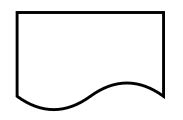 | Данные в подготовленном и удобочитаемом виде. |
| Ручной ввод |  |
Данные, которые самостоятельно вводит пользователь. |
Спецефические элементы данных 3
| Данные с карты |  |
Данные, представленные на носителе в виде карты (перфокарты, магнитные карты, смарт-карты). |
| Бумажный носитель | 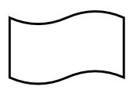 | Отображает данные, представленные на носителе в виде бумажной ленты. |
| Данные с дисплея | |
Данные на носителе в виде отображающего устройства (экран, индикаторы). |
Специальные элементы
Соединитель
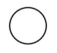Используется для обрыва соединительной линии и продолжения ее в другом месте. Соответствующие символы-соединители должны содержать одно и то же уникальное обозначение.
Всегда парные.
Пример соединителя

Терминатор
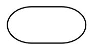Приход терминатора предвещает начало и конец программы, а также любую ситуацию выхода во внешнюю среду (например, необработанное исключение).
Пример терминаторов

Комментарий

Комментарии нужны, чтобы оставлять пометки по элементам алгоритма.
Пример комментариев
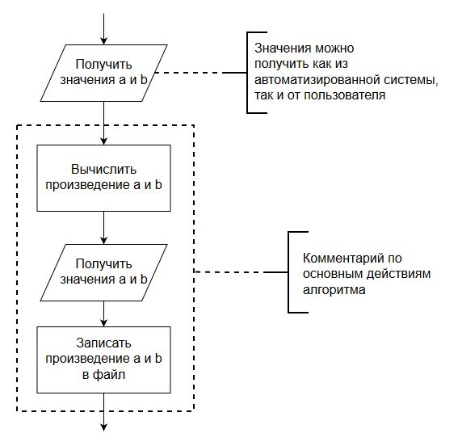Конец ГОСТ-а
Базы данных
Если на схеме необходимо обозначить базу данных, общепринятым считается следующее обозначение:
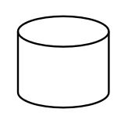Примеры блок-схем
Блок-схема алгоритма формирования ЭЦП

Блок-схема алгоритма верификации ЭЦП

Блок-схема алгоритма расчёта допускаемых скоростей в кривых
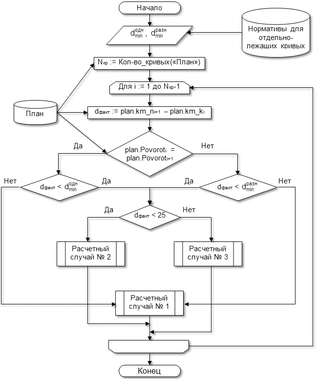Еще одна блок-схема
UML
UML
Обычные блок-схемы слишком просты, и предназначены только для описания конкретных алгоритмов, а не работы всеё системы.
Поэтому сущестует UML.
UML (Unified Modeling Language) - язык графического описания для объектного моделирования в области разработки программного обеспечения, моделирования бизнес-процессов, системного проектирования и отображения организационных структур.
Стандартизацией UML занимается консорциум OMG.
Виды диаграмм
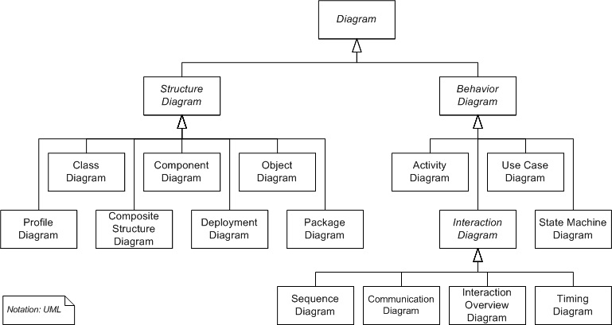Ссылки
Больше о UML можно почитать на Википедии
Что почитать дополнительно?..
Боже упаси